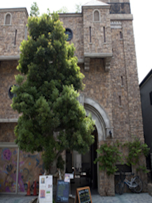

ที่ซับซ้อนซึ่งถูกสร้างขึ้นโดยมีจุดมุ่งหมายที่จะเป็นฐานใหม่สำหรับการเผยแพร่ศิลปะ ตั้งอยู่ในย่านที่อยู่อาศัยที่เงียบสงบไม่เพียง แต่จะให้โอกาสและสถานที่ของการประกาศการทำงานของเรามีการวางแผนความหลากหลายของการจัดนิทรรศการของภาครัฐและการประชุมเชิงปฏิบัติการ มีอิสระแกลเลอรี่ศิลปะพื้นที่ฮอลล์ห้าคอมเพล็กซ์ประมาณ 100 ตารางเมตรบนชั้นสองไปยังชั้นใต้ดินเป็นครั้งแรกนิทรรศการโดยนำการวางแผนของศิลปินวางแผนที่จะค้นพบและแนะนำศิลปินนิทรรศการที่จะจัดขึ้นประชาชนเป็น และการจัดนิทรรศการต่างๆ ข้อมูลในการประชุมเชิงปฏิบัติการและการจัดนิทรรศการ, คุณสามารถตรวจสอบเว็บไซต์อย่างเป็นทางการและ SNS อย่างเป็นทางการ นอกจากนี้ร้านกาแฟที่มีให้ในชั้นแรกที่เปิดพื้นที่ของดวงอาทิตย์กระจายแดดสดใส ผมให้ความสนใจไปยังจุดศิลปะใหม่
